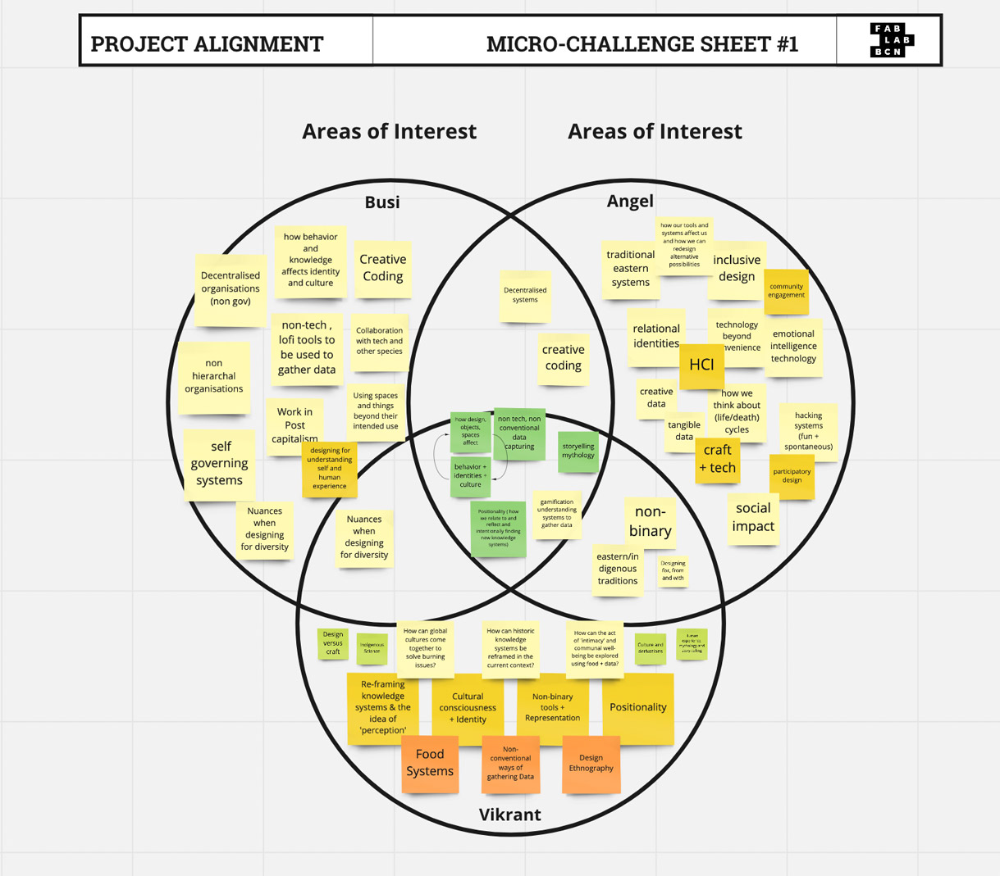
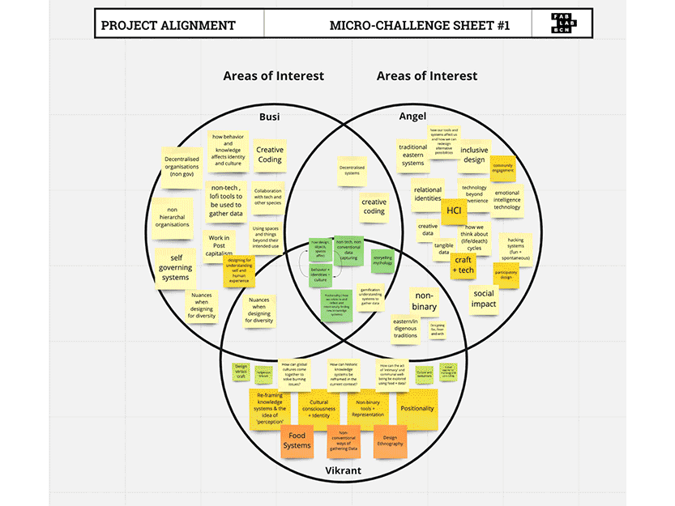
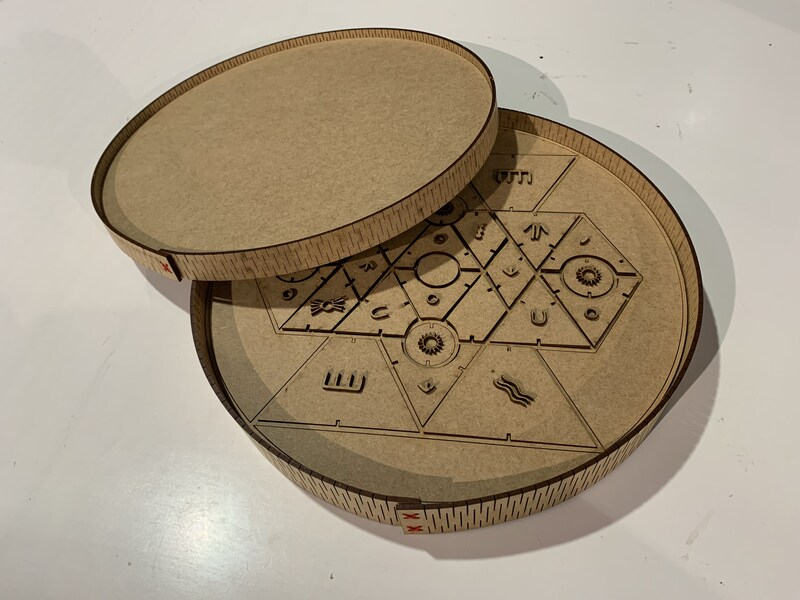

Personal Experiences
For this challenge, we aimed to create a game or tool to help designers ideate and relfect on ways to collaborate during the design process. The main themes was to use non-western indigenous cultures that are commonly undervalued as 'indigenous', 'mythical', or 'non-scientific'. We started by sharing different belief systems, mythologies, indigenous practices, and visuals from each of our cultures. Through this exercise, we found many commonalities within our different cultural stories and designs. On my experiences it was enriching to work together to decided on collective indigienous knowledge sharing systems. We spent a lot of time ideation the concept behind the game, where it was best to ideate through prototype as early as possible.


My Contribution to the project
In the first days, I helped ideate the concept of the game. We decided on 5 themes and pieces of the board: tools, triggers, weak signals, wisdom cards and materials. The themes of the game were inspired from Term 1, where it was relevant for us. I helped sketch out possible ways the game could look and be played. We spent the first two days working out the concept and the form on paper. On the third day, after a discussion with Dafni, who encouraged us to start making test prints, I was only present 2 days of the challenge week due to personal reasons, but the fabrication and github repository was handled by my classmates Vikrant and Angel.

Reflection: Key Learnings